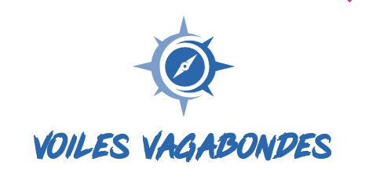

Une association de juristes engagées dans l'économie sociale et solidaire qui veulent
concrétiser leur démarche par l'exemple en mer.
Saigane va reprendre la mer pour mettre en pratique ce que solidarité sociale veut dire et
permettre ainsi à des gens éloigné de la pratique de découvrir la navigation.
L'association VOILES VAGAONDES est une petite association bretonne qui a pour objet le réemploi d'un ou deux voiliers
en vue de le mutualiser et rendre accessible à un grand nombre de personnes les sorties en mer ayant un faible impact
environnemental. Nous sommes une association familiale qui compte entre 10 et 30 membres.
Nous sommes une association d'éducation populaire en ce sens que nous adoptons une posture permettant à toute
personne de se sentir capable de monter, en sécurité, sur un voilier sans avoir à faire ses preuves et nous entendons
susciter l'envie d'observer, de protéger et de s'émerveiller devant les paysages marins. L'aventure n'est pas
forcément à l'autre bout du monde, un "simple" aller retour sur une île à 2 ou 3 heures de voile s'avère
être un moment hors du temps !
En pratique l'association mutualise depuis 5 ans un jouet 22 nommé Eloyan qui est sorti pas moins de 68 jours l'année dernière. Un projet plus ambitieux a été mené sur 2024/2025 avec un petit prince, voilier en acier de 12 mètres qui a été un an en réparation.
Pour 2025/2026, l'association souhaite approfondir son partenariat avec l'association PASSE COQUE et centrer son activité sur un unique voilier d'une taille de 9 mètres. D'où la rencontre avec l'association Passe Coque et son président Pierre Jean qui a proposé de mettre à disposition SAIGAGNE, un Dufour 2800. En plus de la vente de BOEM et le don de ELOYAN a un groupe de personnes sur SAINT MALO, les dirigeants de l'association s'engagent dans une levée de fonds commune pour la remise à l'eau de SAIGANE.
La grande sortie annuelle de l'association VOILES VAGABONDES aura lieu du 2 août au 23 août avec tous les adhérents de l'association ! C'est l'heure de préparer SAIGANE pour cette jolie aventure.
En pratique l'association mutualise depuis 5 ans un jouet 22 nommé Eloyan qui est sorti pas moins de 68 jours l'année dernière. Un projet plus ambitieux a été mené sur 2024/2025 avec un petit prince, voilier en acier de 12 mètres qui a été un an en réparation.
Pour 2025/2026, l'association souhaite approfondir son partenariat avec l'association PASSE COQUE et centrer son activité sur un unique voilier d'une taille de 9 mètres. D'où la rencontre avec l'association Passe Coque et son président Pierre Jean qui a proposé de mettre à disposition SAIGAGNE, un Dufour 2800. En plus de la vente de BOEM et le don de ELOYAN a un groupe de personnes sur SAINT MALO, les dirigeants de l'association s'engagent dans une levée de fonds commune pour la remise à l'eau de SAIGANE.
La grande sortie annuelle de l'association VOILES VAGABONDES aura lieu du 2 août au 23 août avec tous les adhérents de l'association ! C'est l'heure de préparer SAIGANE pour cette jolie aventure.